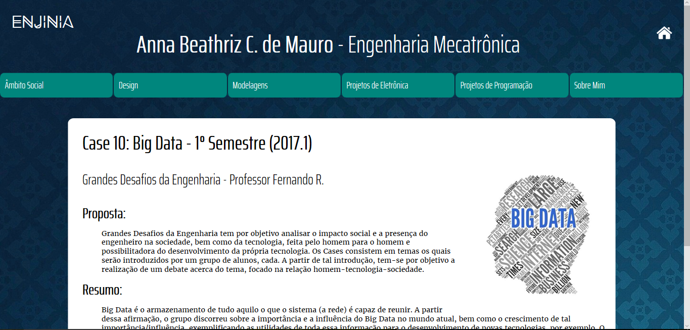

Portfólio de Projetos - 2° Semestre (2017.2)
Co-Design de Aplicativos - Professor Miguel C.

Proposta:
Co-Design de Aplicativos, como o próprio nome da matéria diz, relaciona-se ao processo de programação com base em Design, buscando um melhor contato e uma melhor experiência com o usuário, ou seja, entregando um produto que satisfaz as necessidades do usuário. Esse será também o foco do projeto em questão: a montagem de um website na forma de portfólio dos projetos realizados pelos integrantes do grupo na faculdade.
Objetivos:
A prática de desenvolvimento de websites vinculada ao planejamento e ao ciclo de design: idealizar, programar e validar o protótipo com usuários, visando obter feedback e iterar ainda mais o portfólio, tornando-o cada vez mais acessivo e direto para o leitor. Trabalhar conceitos como o CRAP (Contraste, Repetição, Alinhamento e Proximidade) e, a teoria das cores seria fundamental para o bom desenvolvimento do portfólio.
Conteúdo trabalhado:
- Introdução a Linguagem HTML
- Introdução a Linguagem CSS
- Introdução a Linguagem JavaScript
- CRAP
- Teoria das Cores
Resultados:
Para a construção do Portfólio, seguiram-se as seguintes etapas:
1. Decidiu-se como seria feita a arquitetura da informação, optando por dividir os projetos em categorias que podem ser entendidas não só por pessoas do Insper, as quais conhecem o curso e o nome das matérias, mas como também por qualquer outra pessoa. Essas categorias foram escolhidas de maneira que o usuário encontre o que deseja de maneira mais rápid possível;
2. Esquematizou-se o portfólio, decidindo como seria o alinhamento das páginas, optando por um cabeçalho, seguido de um menu e, embaixo, as páginas de texto. Nas páginas de projeto, optou-se por alinhar os textos à esquerda e imagens à direita;
3. Em relação às cores, inicialmente pensou-se em utilizar tons de roxo, já que encontramos que significa algo formal. Porém ao implementar, percebeu-se que não parecia um site profissional. Depois de pesquisas, decidiu-se na cor azul, utilizando a estratégia monocromática. O azul é muito interessante, pois, além de demonstrar profissionalismo, o tipo de daltonismo que não consegue identificar o azul é um dos mais raros.
4. Após muita pesquisa, decidiu-se a tipografia, escolhendo, para títulos, uma não serifada, para passar uma ideia de algo mais limpo e fácil de ler. Já para os textos, optou-se por uma fonte serifada, porque, através de pesquisas, notou-se que essa é a opinião predominante, defendida pela ideia de que as pessoas não leem letra por letra, mas sim por blocos e que letras serifadas facilitam essa leitura.
O resultado desse processo é este Portfólio.
Mais projetos de design